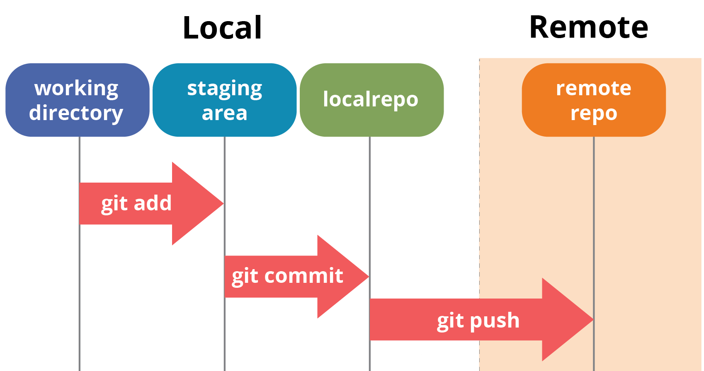

A tutorial: Git and GitHub
A simple tutorial for the most important tool of a developer
1. Overview
1.1 What is Git?

Git is a version control system used to track changes in files or sets of files, originally designed by Linus Torvalds (arguably one of the most influential people in Information Technology) to facilitate cooperation among programmers on source code during software development.
1.2 What is GitHub?

GitHub is a cloud-based hosting service that allows the creation and management of Git repositories. A free, basic user can create unlimited public/private repositories and is provided with 1 free website domain. GitHub also offers premium subscriptions with more advanced features and functionalities.
1.3 Why do we use Git and GitHub?
Whether you are an aspiring IT student or an experienced developer, Git is an indispensable tool that enables you to easily track changes to your code. Tracking your code history is very important, as it helps maintaining different versions of your software, making sure you would never lose any code and could recover them any time. When used in tandem with GitHub, you can effortlessly save your code to the cloud and allow smooth collaboration.
2. Before we start
For this tutorial, we will use:
There will be certain abbreviations used in this tutorial:
3. Setting up
3.1 Setting up your GitHub account and Repo
To create a GitHub account and your first Repository, do the following instructions:


.png)
.png)
You have created your first GitHub repo! Now we can move on to the next section.
3.2 Installing Visual Studio Code

While Git can be used on its own, it is recommended to use an IDE to optimise your workflow. Git supports an impressive number of IDEs, but in this tutorial, we will use Visual Studio Code, an IDE that is incredibly lightweight considering the features it has. Follow the instructions to download and install VS Code:


Just like that and VS Code should be successfully installed afterwards! Now we can move on to the next section.
3.3 Installing Git
Next, we will install Git and assign VS Code as Git’s default editor


Git is now successfully installed! We have finished setting up, now we can get to the part where we use Git.
4. Using Git
4.1 Configuring Git and cloning your remote Repo
Disclaimer: For the purpose of this tutorial, I will use my GitHub account and Repo to demonstrate the process. The following instructions are for Windows.
After we have successfully installed our IDE and Git, we will now configure Git on VS Code using git config and clone our repo using git clone

git config -l and press Enter to check if Git has been properly installed. If your terminal shows a list like below, Git is ready to go. To get out of the config, press Down until the end of the list, then press Q
git config --global user.name [your GitHub user name] and press Entergit config --global user.email [your GitHub email] and press Enter If your terminal shows no error like below, your account config is now configured. 
cd "C:\Users\[Your Windows Username]\Desktop" (with the brackets) and press Enter to set Desktop as your current directory
git clone https://github.com/[your GitHub user name]/[your repo] and press Enter to clone your remote Repo to your local machine. Note: If there is nothing in your Repo, the warning: “warning: You appear to have cloned an empty repository.” will appear. This is normal and is nothing to be worried about


After you have selected the folder with your repo name, a column on should appear on the left, with the repo folder on it.

4.2 Using basic git commands: add, commit, push
After having cloned our remote repo to the local machine, it's time we learn how to use Git to our advantage. First, we will learn how to use git add, git commit and git push. Below is a simple diagram that would help you understand how this works

Let's try to put this to practice:


Next, we will upload this file to the online GitHub repo:

git add . (This will add every single file in your folder) or git add “File Name” with the bracket (This will only add a single file) and press Entergit commit -m “[Your comment]” with the bracket (This is to help you remember what changes” and press Enter
git push (This will upload your file(s) to the remote repo) and press Enter

And voila! The file is now uploaded to your repo. You can check by going to https://github.com/[your GitHub user name]/[your repo]
4.3 Resolving conflicts
When you are working with many collaborators, file conflicts might arise. These conflicts happen when the file version on the repo is different from the one you are having on your local machine. For example, let’s say on your Repo, there is already a file called “conflict.txt” uploaded by another collaborator.


At the same time, on your local machine, you also have a “conflict.txt” file with your local content on it.

If you try to push your local file, an error will occur like the image below

To resolve such conflicts, we have to review the content of both local and remote version to determine which version of the file to keep, by using git add, git commit, git pull and git push command
git add . and press Entergit commit -m "[Your message]" and press Enter
git pull and press Enter. After you press Enter, the interface will change and show 4 options: “Accept Current Change”, “Accept Incoming Change”, “Accept Both Changes” and “Compare Changes”
If you want to use the local content:
git push and press Enter. This will push the local file to the remote repo and replace the file on it
If you want to use the online content:
git push and press Enter
If you want to accept both content (combined content):
git push and press Enter. This will push the combined file to the remote repo and replace the file on it

After having practised this more and more, you will be able to resolve conflicts like a pro!
4.4 Branching
Branching is a very useful utility on GitHub that allows users to expand upon their current projects (i.e. adding new feature) without tampering with the main source code. For example, if you already have a fully functional project on the main branch, but want to safely code and add a new feature to the project without touching the existing code, branching will be your saviour. In essence, branching will create a complete duplicate of everything from the main branch, which would allow you to work on the new feature completely isolated from the original code.
Branch creation
To create a new branch, type in git branch [branch name] and press Enter. A branch with all your files duplicated has been created. However, this branch is only created locally.

To push this branch to your remote repo, type in git push --set-upstream origin [branch name] and press Enter


Navigating through branches and working on the new branch:
If you need to navigate to another branch, or back to the main branch, you can use the command git checkout [destination branch]
For example: Before you can work on the new branch, you have to navigate to the branch you just created by typing in git checkout [branch name] and press Enter.

Once you are now on the [branch name] branch, and all of your work will only be done on this branch, keeping all your code from the main branch safe. Working on a branch is identical to working on the main branch, so if you need help, scroll up!
If you need to go back to the mainbranch, similarly, type in git checkout main and press Enter

Deleting branches
If you want to delete a branch, do the following steps:
git checkout main and press Enter
git push origin --delete [branch name] and hit Enter (This will delete the branch from the remote repo)